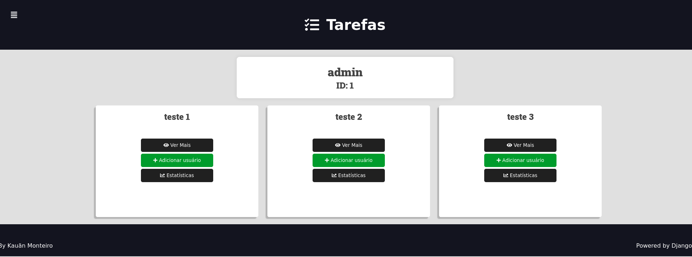
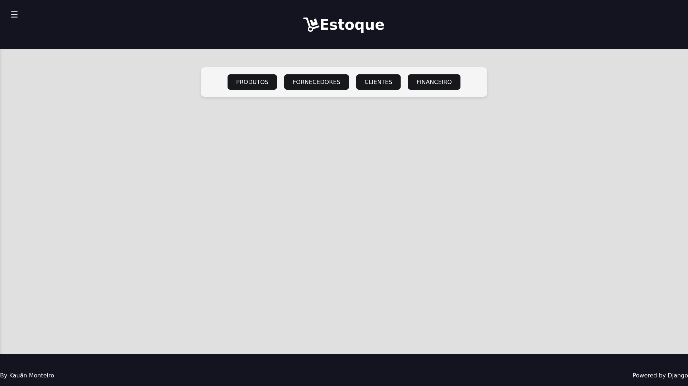
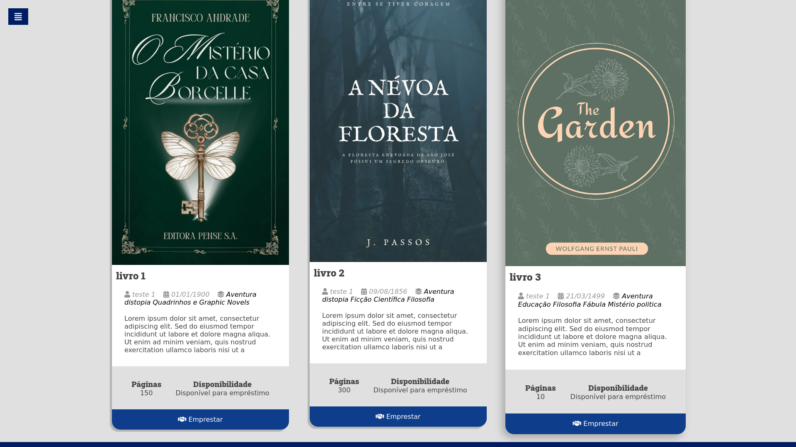

CMSP 2
Sistema de gerenciamento de tarefas que permite a colaboração eficiente entre usuários, como professores e alunos. O projeto foi construído utilizando Django e oferece diversas funcionalidades.

Controle de Estoque
Sistema de gestão integrado para um comércio, utilizando Django e Python, focado na otimização de processos de vendas, controle de estoque e gerenciamento financeiro. Este projeto inclui um dashboard interativo que oferece uma visão abrangente do desempenho do negócio.

Biblioteca
Sistema de gestão de livros utilizando Django e Python, projetado para facilitar a administração de uma biblioteca ou acervo de livros. O sistema oferece uma interface amigável e intuitiva, permitindo aos usuários explorar, emprestar e gerenciar livros de maneira eficiente.
Garra mecanica
Neste projeto, desenvolvi um sistema que integra controle de servos com reconhecimento de gestos usando visão computacional. Utilizando a biblioteca MediaPipe, o programa detecta a posição da mão e traduz esses movimentos em comandos para controlar quatro servos
mao mecanica
Neste projeto, desenvolvi um sistema que integra a detecção de gestos em tempo real com o controle de servos utilizando um Arduino. Utilizei as bibliotecas MediaPipe e OpenCV para capturar e processar a imagem da mão, traduzindo os movimentos em comandos para controlar a posição de cinco servos.